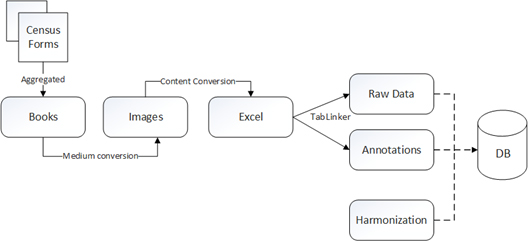
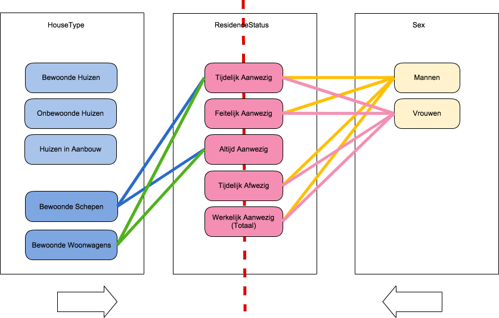

Tranformations of the Dutch Historical Censuses over time

Ashkpour et. al 2015
Looking back at the different transformations the Dutch Historical Censuses underwent we have (finally) arrived at the point of creating a database out of the various Excel tables, producing a set of comparable data across the years. Have a look at our publications for more information about our harmonization model and RDF aproach.
Census Type
Population Census: Local Division Tables.
Census Years
1859
1869
1879
1889
1899
1909
1920
Original Census Tables
| VT_1859_01_H1.xls | |
| VT_1869_01_H1.xls | |
| VT_1879_01_H1.xls | |
| VT_1879_02_H1.xls | |
| VT_1879_03_H1.xls | |
| VT_1879_04_H1.xls | |
| VT_1879_05_H1.xls | |
| VT_1879_06_H1.xls | |
| VT_1879_07_H1.xls | |
| VT_1879_08_H1.xls | |
| VT_1879_09_H1.xls | |
| VT_1879_10_H1.xls | |
| VT_1879_11_H1.xls | |
| VT_1889_03_H1.xls | |
| VT_1889_04_H1.xls | |
| VT_1889_05_H1.xls | |
| VT_1889_06_H1.xls | |
| VT_1889_07_H1.xls | |
| VT_1889_08_H1.xls | |
| VT_1889_09_H1.xls | |
| VT_1889_10_H1.xls | |
| VT_1889_11_H1.xls | |
| VT_1889_12_H1.xls | |
| VT_1889_13_H1.xls | |
| VT_1899_01_H1.xls | |
| VT_1899_02_H1.xls | |
| VT_1899_03_H1.xls | |
| VT_1899_04_H1.xls | |
| VT_1899_05_H1.xls | |
| VT_1899_06_H1.xls | |
| VT_1899_07_H1.xls | |
| VT_1899_08_H1.xls | |
| VT_1899_09_H1.xls | |
| VT_1899_10_H1.xls | |
| VT_1899_11_H1.xls | |
| VT_1899_12_H1.xls | |
| VT_1909_01_T.xls | |
| VT_1920_01_T.xls |
Our use case contains 58 tables in total (note: the years 1909, 1920 and 1850 contain 12 tables/sheets per Excel file)
Click here to view the source data on GitHub
Variable Overview
| Variables: | 1859 | 1869 | 1879 | 1889 | 1899 | 1909 | 1920 |
| Provincie | X | X | X | X | X | C | X |
| Gemeente | X | X | X | X | X | X | X |
| Kom / buiten de kom | X | X | X | X | X | X | X |
| Wijk | X | X | X | X | X | X | |
| Plaats | X | X | X | X | X | X | X |
| Onderdeel van plaats | X | ||||||
| Soort plaats | X | ||||||
| Water-,veen-,Hoogheemsraadschap | X | ||||||
| Bewoonde oorden | X | ||||||
| Verspreide huizen | X | ||||||
| Bewoonde huizen | X | X | X | X | X | X | X |
| Onbewoonde huizen | X | X | X | X | X | X | X |
| In aanbouw | X | X | X | X | X | X | |
| Woningtype* | X | X | X | X | X | ||
| Doel der gestichten | X | X | |||||
| Bewoonde schepen Altijd Aanwezig | X | X | X | X | X | X | X |
| Bewoonde schepen - Tijdelijk Aanwezig | X | X | X | X | Z | ||
| Bewoonde Wagens Altijd Aanwezig | X | X | X | ||||
| Bewoonde Wagens - Tijdelijk Aanwezig | X | X | X | ||||
| Onbewoonde gebouwen | X | X | X | ||||
| Huisgezinnen | X | X | |||||
| Bevolking - Mannen | X | X | X | X | C | C | C |
| Bevolking - Vrouwen | X | X | X | X | C | C | C |
| Bevolking - Totaal | C | C | C | C | X | X | X |
| Bev - Bij telling Aanwezig - Mannen | X | X | X | X | X | X | |
| Bev - Bij telling Aanwezig - Vrouwen | X | X | X | X | X | X | |
| Bev - Tijdelijk Aanwezig - Mannen | X | X | X | X | X | X | |
| Bev - Tijdelijk Aanwezig - Vrouwen | X | X | X | X | X | X | |
| Bev. Tijdelijk Afwezig Mannen | X | X | X | ||||
| Bev. Tijdelijk Afwezig Vrouwen | X | X | X |
C* variable can be computed (i.e.variable creation)
| Blue: Geographical Context Variables |
| Orange: Housing Variables |
| Green: Demographical Variables |
Variable Mappings

Ashkpour et. al 2016
Click here to view the harmonization rules on GitHub
Classification Systems
Amsterdamse Code Historical Classification of Municipalities click here
Lower level municipal areas (Kom and Wijk) click here
Housing Classification of historical housing types click here